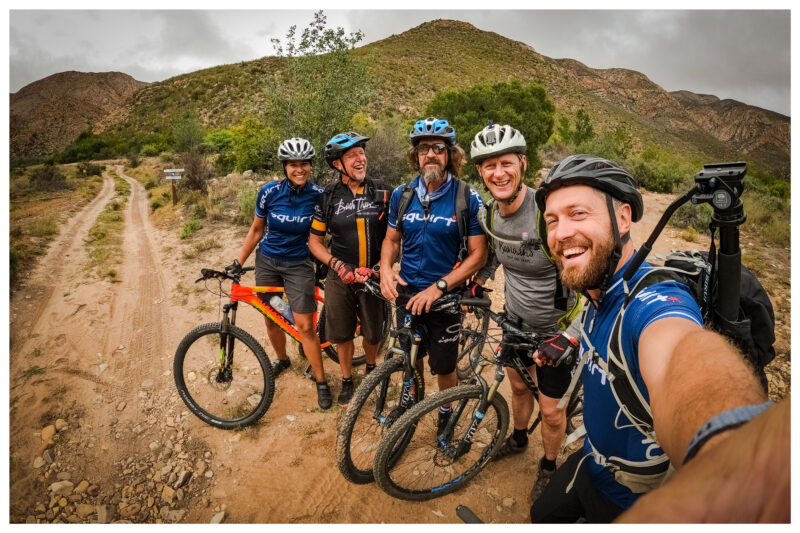
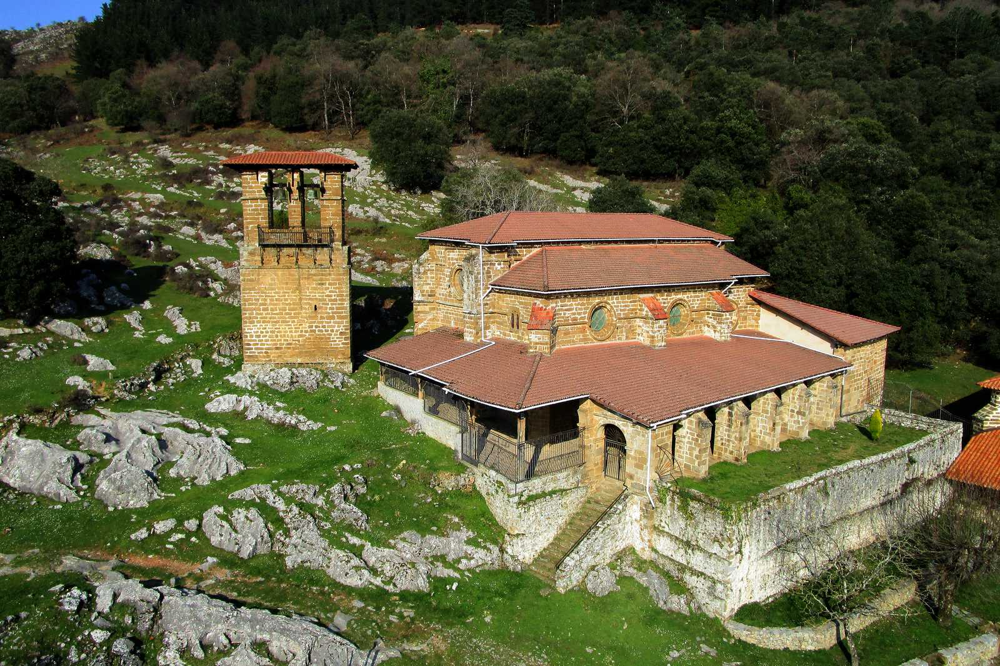
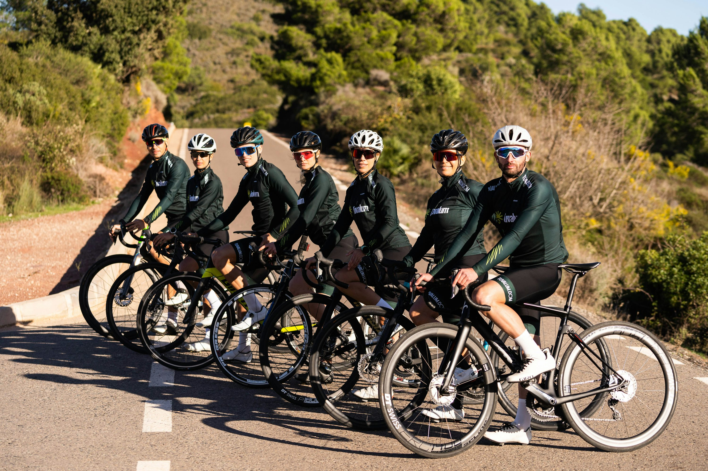
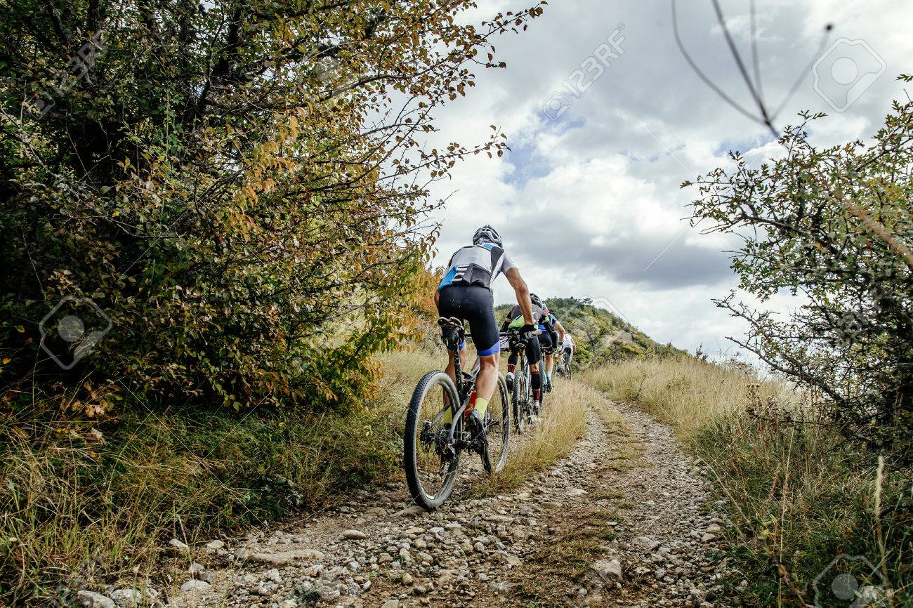
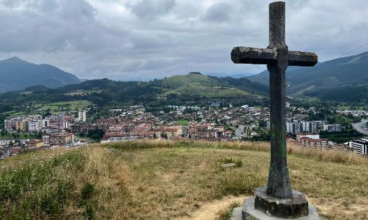
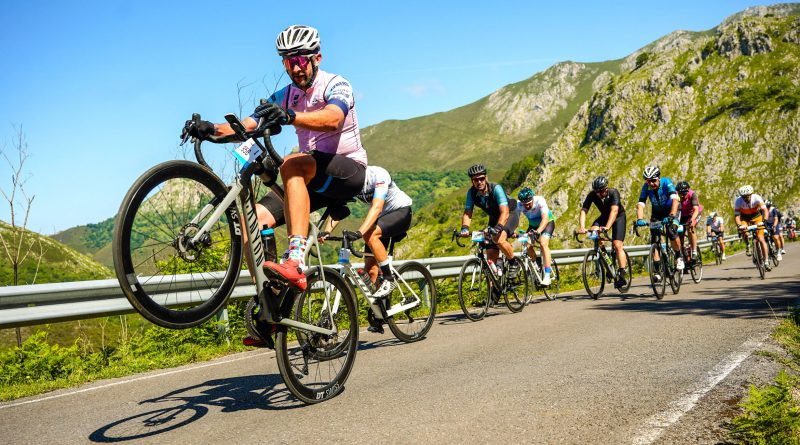

Ziklounir
Bienvenidos al Club Ziklounir. Somos un espacio dedicado a fomentar la cultura deportiva, la integración estudiantil y la excelencia académica a través de la pasión por el ciclismo.
Nuestra misión es unir a la comunidad apasionada del ciclismo bajo los valores del esfuerzo, el compañerismo y el liderazgo. Como sede oficial en Colombia, promovemos un estilo de vida saludable y activo, conectando a estudiantes, docentes y egresados en las carreteras y montañas de nuestro país.

En el Club UNIR Colombia ofrecemos una plataforma para que nuestros miembros participen en retos nacionales, rutas de integración regional y seminarios de alto rendimiento deportivo. Aprovechamos la flexibilidad de nuestra metodología virtual para organizar encuentros presenciales que fortalecen el tejido social de nuestra sede.
Más que un club deportivo, somos una red de apoyo universitaria que celebra la diversidad geográfica de Colombia. Si eres parte de la UNIR y te apasiona el pedal, este es tu lugar para pedalear hacia el éxito académico y personal.
Nuestra Misión
Promover el deporte como herramienta de formación integral, disciplina y superación personal para todos nuestros integrantes.
Nuestra Visión
Ser el club referente de la comunidad universitaria, destacando por nuestra organización, rutas seguras y formación técnica de calidad.
Pasión y Seguridad
Amamos lo que hacemos y tu integridad es nuestra prioridad en cada kilómetro recorrido.
Comunidad
Juntos llegamos más lejos. El apoyo mutuo y el compañerismo son nuestra base fundamental.
